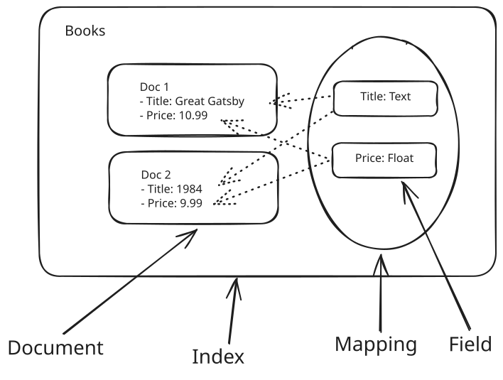
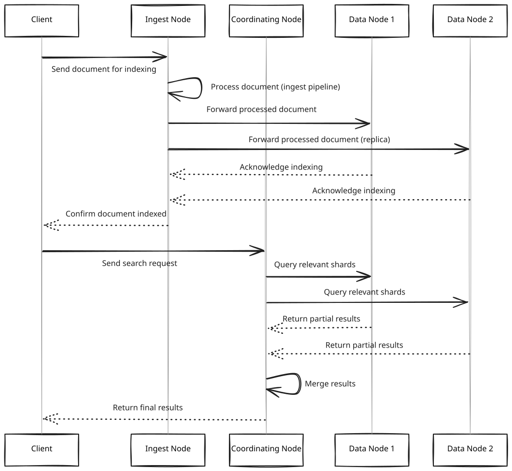
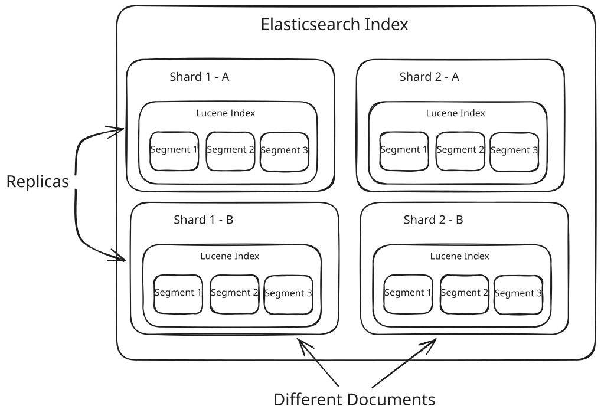
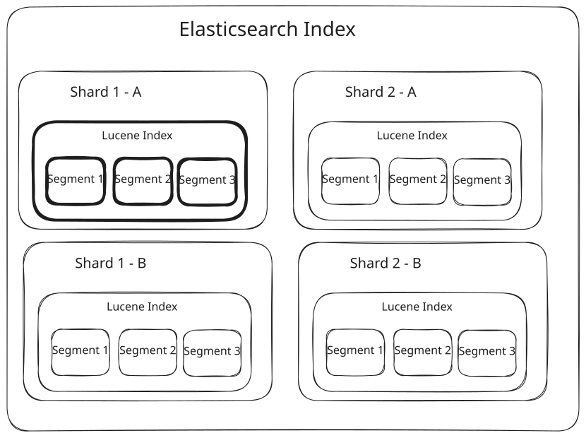
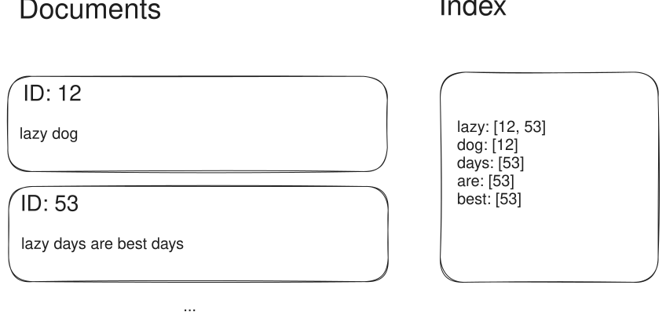

Key Technologies
Elasticsearch
Learn about how you can use Elasticsearch to solve a large number of problems in System Design.
Many system design problems will involve some aspect of search and retrieval: I've got a lot of "things" and I want to be able to find the right one(s). While most database systems are pretty good at this (e.g. Postgres with a full-text index is sufficient for many problems!), at a certain scale or level of sophistication you'll want to bring out a purpose-built system. And usually this involves a lot of similar requirements like sorting, filtering, ranking, faceting, etc. Enter one of the most well-known search engines: Elasticsearch.
From an interview perspective, this deep dive will tackle two different angles to understanding Elasticsearch:
- First, you'll learn how to use Elasticsearch. This will give you a powerful tool for your arsenal. Rarely are you going to find a search and retrieval question which is too complex for Elasticsearch. If you're interviewing for a startup or interviewing at a product architecture-style interview, knowing Elasticsearch will help. You can skip this section if you've used it before!
- Secondly, you'll learn how Elasticsearch works under the hood. As an incredible piece of distributed systems engineering, Elasticsearch brings together a lot of different concepts which can be used even outside search and retrieval problems. And some gnarly interviewers (I'm not the only one, I promise!) might ask you to pretend Elasticsearch doesn't exist and explain some of the top-level concepts yourself. This is more common for infra- heavy roles, particularly at cloud companies.
Elasticsearch is an enormous project built over more than a decade so there's a ton of features and functionality that we won't cover here, but we'll try to cover important bits in as we dig all the way in to this project. Off we go.
Basic Concepts
Let's start with names. The important concepts of Elasticsearch from a client perspective are documents, indices, mappings, and fields.

Key Concepts
Documents
Documents are the individual units of data that you're searching over. A "document" doesn't have to be a website or a blog post, so don't get too hung up on the terminology. Just think of it like any JSON object. Like books in our bookstore:
{
"id": "XYZ123",
"title": "The Great Gatsby",
"author": "F. Scott Fitzgerald",
"price": 10.99,
"createdAt": "2024-01-01T00:00:00.000Z"
}Indices
An index is a collection of documents. Each document is associated with a unique ID and a set of fields, which are key-value pairs that contain the data you're searching over. Think of an index as a database table. Searches happen against these indices and return document results which match the search criteria.
Note this terminology overloads the more general term "index" which is often used to describe auxilary data structures which make searches faster. We'll try to clarify which "index" we're talking about to avoid confusion.
We'll create an index for our books, but we might have indexes for any number of different entities relevant to our business. Reviews, users, orders, etc.
Mappings and Fields
Finally, a mapping is the schema of the index. It defines the fields that the index will have, the data type of each field, and any other properties like how the field is processed and indexed. You can put whatever data you want in the document, but the mapping determines which fields are searchable and what type of data they contain.
These types can be arbitrarily complex. For example, you can nest objects and arrays within your documents, use special geospatial types like geo_point and geo_shape, define custom analyzers, or even use embeddings for semantic search. We won't go into all of these but if you suspect you'll need something else for search, there's a solid chance Elasticsearch already has you covered.
Here's an example of a mapping:
{
"properties": {
"id": { "type": "keyword" },
"title": { "type": "text" },
"author": { "type": "text" },
"price": { "type": "float" },
"createdAt": { "type": "date" }
}
}The mapping is crucial because it tells Elasticsearch how to interpret the data you're storing. For example, in the mapping above we define id as a keyword type. This means that the id field is treated as a whole value rather than as a string that can be tokenized. This is important because it allows for more efficient searching and sorting. While I'm usually looking up a single value of id (think: hash table!), searches against title might include queries that try to see whether a given title contains a certain value (think: reverse index!).
Mappings also have some important implications on the performance of your cluster: if you include a lot of fields in your mapping that aren't actually used in search, this increases the memory overhead of each index. This can lead to performance issues and increased costs. Say you have a User object with 10 fields, but you only allow searching by 2 of them. If you map the entire object, you're wasting memory on the 8 fields that you're not using. This is notable because a lot of the control that you will exert over query performance depends on adjustments to the mapping and various cluster parameters. We'll touch on that later.
Basic Use
Next, let's walk through a series of operations to create an index, store some data, and perform a search to get an idea of the essential functionality. Elasticsearch has a nice, clean REST API that makes it easy to perform these operations although there are plenty of GUIs and clients available.
Create an Index
A simple PUT request will create an index with a dynamic mapping, 1 shard, and 1 replica. These are parameters you can update after the index is created.
// PUT /books
{
"settings": {
"number_of_shards": 1,
"number_of_replicas": 1
}
}Set a Mapping
If dynamic mapping isn't appropriate (maybe most of the fields in my data aren't searchable), I can set a mapping for the index up front. This lets Elasticsearch know that certain fields should be treated as searchable and what types to expect in those fields.
// PUT /books/_mapping
{
"properties": {
"title": { "type": "text" },
"author": { "type": "keyword" },
"description": { "type": "text" },
"price": { "type": "float" },
"publish_date": { "type": "date" },
"categories": { "type": "keyword" },
"reviews": {
"type": "nested",
"properties": {
"user": { "type": "keyword" },
"rating": { "type": "integer" },
"comment": { "type": "text" }
}
}
}
}Here I've pre-registered the fields I want to be searchable for my bookstore. When I add documents, Elasticsearch will extract values for these fields and index them so that they're ready to be searched.
Mappings can be very complex and can change over time as you add more data and new use cases emerge. As one example, note the nested review field. In this case, each review is a nested document with its own fields. This is different from a flat structure where each review is a separate document.
Your decision of whether to nest reviews within the individual books largely depends on the data update and query patterns and is fair game for a picky interviewer. If reviews are infrequently updated and frequently queried, it may be more efficient to nest them within the book documents. Otherwise you'll probably want to create a separate index for reviews. Think of this like the normalization/denormalization tradeoff that might be familiar if you've worked with SQL databases.
Add Documents
So I got an index and a mapping, great. Next, I need to add documents to the index! This is a simple HTTP POST to the /_doc endpoint.
// POST /books/_doc
{
"title": "The Great Gatsby",
"author": "F. Scott Fitzgerald",
"description": "A novel about the American Dream in the Jazz Age",
"price": 9.99,
"publish_date": "1925-04-10",
"categories": ["Classic", "Fiction"],
"reviews": [
{
"user": "reader1",
"rating": 5,
"comment": "A masterpiece!"
},
{
"user": "reader2",
"rating": 4,
"comment": "Beautifully written, but a bit sad."
}
]
}If I want to add another, I can make another request.
// POST /books/_doc
{
"title": "To Kill a Mockingbird",
"author": "Harper Lee",
"description": "A novel about racial injustice in the American South",
"price": 12.99,
"publish_date": "1960-07-11",
"categories": ["Classic", "Fiction"],
"reviews": [
{
"user": "reader3",
"rating": 5,
"comment": "Powerful and moving."
}
]
}Each of these requests will return a document ID along with data about how the document was persisted across the cluster.
{
"_index": "books",
"_id": "kLEHMYkBq7V9x4qGJOnh",
"_version": 1, // NOTE!
"result": "created",
"_shards": {
"total": 2,
"successful": 1,
"failed": 0
},
"_seq_no": 0,
"_primary_term": 1
}Take special note of that _version field. This is a special field that Elasticsearch uses to ensure the document can be updated atomically.
Updating Documents
Updating a document is similar to creating a document, but you need to specify the document ID in the URL. We can raise our price by specifying the entire document:
// PUT /books/_doc/kLEHMYkBq7V9x4qGJOnh
{
"title": "To Kill a Mockingbird",
"author": "Harper Lee",
"description": "A novel about racial injustice in the American South",
"price": 13.99,
"publish_date": "1960-07-11",
"categories": ["Classic", "Fiction"],
"reviews": [
{
"user": "reader3",
"rating": 5,
"comment": "Powerful and moving."
}
]
}And this might be appropriate in some instances, but it can be risky! If another process is updating the same document concurrently, you could overwrite their changes.
If we want to guard against this we can use the _version field from above to specify that we only want to update the document if the version matches. The following request will only update the document if the version is 1. Otherwise it will throw an error.
// PUT /books/_doc/kLEHMYkBq7V9x4qGJOnh?version=1
...These errors give clients an opportunity to handle the conflict and retry the request, a simple example of optimistic concurrency control.
Finally, the _update endpoint (note POST) allows you to update some fields of a document without having to fetch the entire document.
// POST /books/_update/kLEHMYkBq7V9x4qGJOnh
{
"doc": {
"price": 14.99
}
}It may be obvious why this would be useful for clients, but remember that Elasticsearch is distributed, asynchronous, and concurrent. Your request is potentially sent to many different nodes and the requests can arrive out of order. Being explicit about the update semantics makes sure that the updates happen as you expect.
Take note of some of these mechanics for the API design questions of your interview. Some companies and interview types go dramatically deeper on API design and learning from popular open source projects is a great way to develop your skills.
Search
Ok, so we've got an index with documents, how do we actually search for them? Elasticsearch makes this straightforward! The Elasticsearch query syntax is very similar to that of SQL, and it's also JSON based which makes it very easy to work with.
A simple query might be to search for books with "Great" in the title:
// GET /books/_search
{
"query": {
"match": {
"title": "Great"
}
}
}Is this a body in a GET request? Yes and no. Elasticsearch will respond to GET requests with bodies, or if you're dealing with a pedantic proxy you'll need to pack this object into the query string or use the POST endpoint. I've written it this way to make it more readable.
We can also search for books with "Great" in the title that are priced less than 15 dollars:
// GET /books/_search
{
"query": {
"bool": {
"must": [
{ "match": { "title": "Great" } },
{ "range": { "price": { "lte": 15 } } }
]
}
}
}Finally, we can search within our nested "reviews" field for books with an "excellent" review:
// GET /books/_search
{
"query": {
"nested": {
"path": "reviews",
"query": {
"bool": {
"must": [
{ "match": { "reviews.comment": "excellent" } },
{ "range": { "reviews.rating": { "gte": 4 } } }
]
}
}
}
}
}The response might look like this:
{
"took": 7,
"timed_out": false,
"_shards": {
"total": 5,
"successful": 5,
"skipped": 0,
"failed": 0
},
"hits": {
"total": {
"value": 2,
"relation": "eq"
},
"max_score": 2.1806526,
"hits": [
{
"_index": "books",
"_type": "_doc",
"_id": "1",
"_score": 2.1806526,
"_source": {
"title": "The Great Gatsby",
"author": "F. Scott Fitzgerald",
"price": 12.99
}
},
{
"_index": "books",
"_type": "_doc",
"_id": "2",
"_score": 1.9876543,
"_source": {
"title": "Great Expectations",
"author": "Charles Dickens",
"price": 10.50
}
}
]
}
}We're utilizing the mapping and applying a series of constraints/filters to the data to get our results. The results contain both the document ids of the matching books, scores based on relevance (more on this in a second), and the source documents (in this case, my books JSON) if I didn't explicitly specify otherwise.
Geospatial Search
One of Elasticsearch's most powerful (and interview-relevant) capabilities is its native support for geospatial data. If you're designing something like Yelp, Uber, or any location-based service, this is where Elasticsearch really shines compared to a traditional relational database.
Elasticsearch supports two primary geospatial field types:
- geo_point: Stores a single latitude/longitude pair. Use this for things like restaurant locations, user check-ins, or delivery addresses.
- geo_shape: Stores arbitrary geometries — polygons, lines, circles, bounding boxes. Use this for delivery zones, city boundaries, or service coverage areas.
To use geospatial search, you first need to define the field type in your mapping:
{
"properties": {
"name": { "type": "text" },
"location": { "type": "geo_point" },
"delivery_zone": { "type": "geo_shape" }
}
}Then when you add a document, include the coordinates:
// POST /restaurants/_doc
{
"name": "Joe's Pizza",
"location": { "lat": 40.7128, "lon": -74.0060 },
"delivery_zone": {
"type": "polygon",
"coordinates": [[[-74.01, 40.71], [-74.00, 40.71], [-74.00, 40.72], [-74.01, 40.72], [-74.01, 40.71]]]
}
}Now you can run geospatial queries. The most common is geo_distance, which finds documents within a radius of a point:
// GET /restaurants/_search
{
"query": {
"geo_distance": {
"distance": "5km",
"location": { "lat": 40.7128, "lon": -74.0060 }
}
}
}You can combine this with other filters in a bool query — find Italian restaurants within 2 miles, sorted by rating. That's exactly the kind of multi-faceted search that makes Elasticsearch a natural fit for location-based applications.
Under the hood, Elasticsearch uses a combination of geospatial indexing strategies — including geohashes, BKD trees (a variant of k-d trees optimized for block storage), and R-tree-like structures — to make these queries fast even across millions of documents. The geo_point type specifically uses a BKD tree to index coordinates, which allows Elasticsearch to efficiently narrow the search space in two dimensions without the limitations of a standard B-tree index on latitude and longitude separately.
Sort
Once we've narrowed down the results to a set of books that we think are interesting, how do we sort them so that our users get the best results at the top of the page?
Sorting is a crucial feature in Elasticsearch that allows you to order your search results based on specific fields.
Basic Sorting
To sort results, you can use the sort parameter in your search query. Here's a basic example that sorts books by price in ascending order:
// GET /books/_search
{
"sort": [
{ "price": "asc" }
],
"query": {
"match_all": {}
}
}You can also sort by multiple fields. For instance, to sort by price ascending and then by publish date descending:
// GET /books/_search
{
"sort": [
{ "price": "asc" },
{ "publish_date": "desc" }
],
"query": {
"match_all": {}
}
}Sorting by Script
Elasticsearch also allows sorting based on custom scripts (using the "Painless" scripting language). This is useful when you need to sort by a computed value. Here's an example that sorts books by a discounted price (10% off) - which you would never do because the sort order is identical:
// GET /books/_search
{
"sort": [
{
"_script": {
"type": "number",
"script": {
"source": "doc['price'].value * 0.9"
},
"order": "asc"
}
}
],
"query": {
"match_all": {}
}
}Sorting on Nested Fields
When dealing with nested fields, you need to use a nested sort. This ensures that the sort values come from the same nested object. Here's how you might sort books by their highest review rating:
// GET /books/_search
{
"sort": [
{
"reviews.rating": {
"order": "desc",
"mode": "max",
"nested": {
"path": "reviews"
}
}
}
],
"query": {
"match_all": {}
}
}Relevance-Based Sorting
If we don't specify a sort order, Elasticsearch sorts results by relevance score (_score). This is configurable, but the default scoring algorithm is related closely to TF-IDF (Term Frequency-Inverse Document Frequency).
If you haven't already heard about TF-IDF, it's worth 10 minutes of your time to learn about it as it's useful in a wide variety of contexts!
Pagination and Cursors
Our last concern after specifying how we filter and sort our results is how to get them back to the user, basically how we can paginate them. Pagination in Elasticsearch allows you to retrieve a subset of search results, typically used to display results across multiple pages. While we need to determine how we're going to specify the results on each page (either by number or by filtering criteria), we also need to consider whether we want to maintain state or re-run our search query on every page/request.
From/Size Pagination
This is the simplest form of pagination, where you specify:
- from: The starting index of the results
- size: The number of results to return
Example query:
// GET /my_index/_search
{
"from": 0,
"size": 10,
"query": {
"match": {
"title": "elasticsearch"
}
}
}However, this method becomes inefficient for deep pagination (e.g., beyond 10,000 results) due to the overhead of sorting and fetching all preceding documents. The cluster needs to retrieve and sort all these documents on each request, which can be prohibitively expensive.
Search After
This method is more efficient for deep pagination. It uses the sort values of the last result as the starting point for the next page. With these values we can restrict each page to only fetch the documents that come after the last document of the previous page, progressively restricting the search set.
Example:
// GET /my_index/_search
{
"size": 10,
"query": {
"match": {
"title": "elasticsearch"
}
},
"sort": [
{"date": "desc"},
{"_id": "desc"}
],
"search_after": [1463538857, "654323"]
}The search_after parameter uses the sort values from the last result of the previous page. Here's how it works:
- In your initial query, you don't include the search_after parameter.
- From the results of your initial query, you take the sort values of the last document.
- These sort values become the search_after parameter for your next query.
In the example above:
- 1463538857 is a timestamp (the date field's value for the last document in the previous page).
- "654323" is the _id of the last document in the previous page.
By providing these values, Elasticsearch knows exactly where to start for the next page, making it very efficient even for deep pagination. This approach ensures that:
- You don't miss any documents added in subsequent pages (even if new documents are added between requests).
- You don't get duplicate results across pages.
However, it requires maintaining state on the client side (remembering the sort values of the last document), and it doesn't allow random access to pages - you can only move forward through the results. This style of pagination also risks missing documents in prior pages if the underlying data is updated or deleted.
Cursors
Cursors in Elasticsearch provide a stateful way to paginate through search results, solving the problem of the documents shifting underneath you. Cursors maintain consistency across paginated requests, and thus require a lot more overhead than the pagination methods we've already discussed.
Elasticsearch uses the point in time (PIT) API in conjunction with search_after for cursor-based pagination:
- Create a PIT:
// POST /my_index/_pit?keep_alive=1mThis returns a PIT ID.
- Use the PIT in searches:
// GET /_search
{
"size": 10,
"query": {
"match": {
"title": "elasticsearch"
}
},
"pit": {
"id": "46To...",
"keep_alive": "1m"
},
"sort": [
{"_score": "desc"},
{"_id": "asc"}
]
}- For subsequent pages, add search_after:
// GET /_search
{
"size": 10,
"query": {
"match": {
"title": "elasticsearch"
}
},
"pit": {
"id": "46To...",
"keep_alive": "1m"
},
"sort": [
{"_score": "desc"},
{"_id": "asc"}
],
"search_after": [1.0, "1234"]
}- Close the PIT when done:
// DELETE /_pit
{
"id" : "46To..."
}Using PITs with search_after provides a consistent view of the data throughout the pagination process, even if the underlying index is being updated.
How it works
Woo! So now that you have a basic understanding of how you might use Elasticsearch as a client, the natural next step for us is to dive into how it works under the covers. How are each of these operations implemented?
Elasticsearch can be thought of as a high-level orchestration framework for Apache Lucene, the highly optimized low-level search library. Elasticsearch handles the distributed systems aspects: cluster coordination, APIs, aggregations, and real-time capabilities while the "heart" of the search functionality is handled by Lucene.
There's enough here to talk for hours so let's start with the high-level architecture of an Elasticsearch cluster and then we'll dive into some of the most interesting bits of indexing and searching.
Cluster Architecture
Node Types
Elasticsearch is a distributed search engine. When you spin up an Elasticsearch cluster, you're actually spinning up multiple nodes. Nodes can be of 5 types which are specified when the instance is started.
- Master Node is responsible for coordinating the cluster. It's the only node that can perform cluster-level operations like adding or removing nodes, and creating or deleting indices. Think of it like the "admin".
- Data Node is responsible for storing the data. It's where your data is actually stored. You'll have lots of these in a big cluster.
- Coordinating Node is responsible for coordinating the search requests across the cluster. It's the node that receives the search request from the client and sends it to the appropriate nodes. This is the frontend for your cluster.
- Ingest Node is responsible for data ingestion. It's where your data is transformed and prepared for indexing.
- Machine Learning Node is responsible for machine learning tasks.
These nodes work together in pretty straightforward ways. Here's a sequence diagram of Ingest nodes loading data into Data nodes which are then queried via Coordinating Nodes:

Sequence Diagram
Every instance of Elasticsearch can be of multiple types, and the type is determined by the node's configuration. For example, an instance can be configured to be a master-eligible node AND coordinating node. In more sophisticated deployments, you might have dedicated hosts for each of these types (e.g. your ingest node host might be CPU bound and have many processors while your data node host might have high disk I/O or more memory).
Each of these node types also has specializations. As an example, data nodes can be hot, warm, cold, or frozen depending on how likely the data is to be queried (e.g. recent or not) and whether it can change.
When the cluster starts, you'll specify a list of seed nodes (these are master-eligible) which will perform a leader election algorithm to choose a master for the cluster. Only one node should be the active master at a time, while the other master-eligible nodes are on standby.
While ingest and coordinating nodes are interesting, data nodes are where the magic of search happens, so let's start there.
Data Nodes
The primary function of data nodes is to store documents and make them rapidly searchable. Elasticsearch does this by separating the raw _source data (remember seeing this in our search results above?) from Lucene indexes that are used in search. You can think of it like having a separate document database.
Requests proceed in two phases: first the "query" phase is when the relevant documents are identified using the optimized index data structures and the "fetch" phase is when those document IDs are (optionally) pulled from the nodes.
The ideal queries are ones that can be answered without ever touching the source documents, sometimes by pulling the relevant data into the index via included fields.
Data nodes house our indices (from earlier) which are comprised of shards and their replicas. Inside those shards are Lucene indexes which are made up of Lucene segments.

Elasticsearch Russian Dolls
Shards allows Elasticsearch to split data (and the accompanying indexes) across hosts. This allows Elasticsearch to distribute both your documents and the corresponding index structures across multiple nodes in your cluster, which significantly improve performance and scalability.
Searches will be executed across all relevant shards in parallel, and the results will be merged and sorted by the coordinating node. Queries are generally executed on the coordinating node, which then distributes the query to the appropriate shards.
A replica is an exact copy of a shard. Elasticsearch allows you to create one or more copies of your index's shards, which are called replica shards, or just replicas.
Replicas serve two primary purposes: high availability and increased throughput. If our shard can handle X TPS, then by having Y replicas we can handle X * Y TPS (all other things equal).
The coordinating node can leverage replicas to improve search performance by distributing search requests across all available shard copies (primary and replica), effectively load balancing the search workload across the cluster.
Lastly, Elasticsearch shards are 1:1 with Lucene indexes. Remember earlier that Lucene is the low-level, highly optimized search library at the heart of Elasticsearch. Many of the operations that Elasticsearch needs to perform with shards (merging, splitting, refreshing, searching) are actually proxy operations on the Lucene indexes underneath.
At this point we can start to oversimplify Elasticsearch like a bunch of availability and scalability on top of a big bag of Lucene indexes.
Lucene Segment CRUD
Lucene indexes are made up of segments, the base unit of our search engine. Segments are immutable containers of indexed data. Let that word sink in for one second before we continue. Don't we need to be able to update, add, and delete documents from our Elasticsearch index?

Lucene Segments
The way that Lucene indexes work is by batching writes and constructing segments. When we insert a document, we don't immediately store it in the index. Instead, we add it to a segment. When we have a batch of documents, we construct a segment and flush it out to disk.
When segments get too numerous, we can merge them: we create a new segment from the segments we want to merge and remove the previous segments.
Deletions are tricky: each segment actually has a set of deleted identifiers. When a segment is queried for data against a deleted document, it pretends it doesn't exist - but the data is still there! During merge operations, the merged segments clean up deleted documents.
Finally for update events we don't actually update the segment. Instead, we soft delete the old document and insert a new document with the updated data. That old document gets cleaned up on segment merge events later. This makes deletions super fast but have some lasting performance penalties until we merge and clean up those segments. Ideally we're not doing it a lot!
Note here that updates actually have worse performance than insertions because we need to handle the bookkeeping of soft deletions. This is part of why Elasticsearch isn't a great fit for data that is rapidly updating.
This immutable architecture carries a number of benefits for Lucene:
- Improved write performance: New documents can be quickly added to new segments without modifying existing ones.
- Efficient caching: Since segments are immutable, they can be safely cached in memory or on SSD without worrying about consistency issues.
- Simplified concurrency: Read operations don't need to worry about the data changing mid-query, simplifying concurrent access.
- Easier recovery: In case of a crash, it's easier to recover from immutable segments as their state is known and consistent.
- Optimized compression: Immutable data can be more effectively compressed, saving disk space.
- Faster searches: The immutable nature allows for optimized data structures and algorithms for searching.
However, this design also introduces some challenges, such as the need for periodic segment merges and the temporary increased storage requirements before cleanup operations. Elasticsearch and Lucene have sophisticated mechanisms to manage these trade-offs effectively.
These kind of design decisions (how to use immutability to your advantage) are a big consideration in data-heavy infrastructure system design interviews! Hopefully they're inspiring some ideas for how you think about other systems you might build.
Lucene Segment Features
Segments aren't just dumb containers of document data, they also house highly-optimized data structures relevant for search operations. Two of the most important ones are the inverted index and doc values.
Inverted Index
If Lucene is the heart of Elasticsearch, the inverted index is the heart of Lucene. Fundamentally, if you want to make finding things fast you have two options:
- You can organize your data according to how you want to retrieve it. If you wanted to look up specific instances, a poor choice would be a table which you need to scan through every item (O(n)), a better one would be a sorted list (O(log(n))), and the best strategy would be a hash table (O(1)).
- You can copy your data and organize the copy like (1).
Let's pretend we have 1 billion books, a small number of which the title contains the word "lazy". We want to create some code that can find all the books that contain the word "lazy" as fast as possible. How might we do this?

Inverted Index
An inverted index is a data structure used to store mapping from content, such as words or numbers, to its locations in a database, or in this case, documents. This is what makes keyword search with Elasticsearch fast. It lists every unique word that appears in any document and identifies all the documents each word occurs in. In this case, a map from strings like "lazy" to the documents that contain that token (above, documents #12 and #53).
Now instead of having to scan every document to find the documents that contain the word "lazy", we can just look up the inverted index and find the documents that contain the word "lazy" in constant time.
We've exploited (1) and (2) above - by creating copies of our data and cleverly arranging it, we turn an O(n) scan into an O(1) lookup. Clever!
Doc Values
Now, what if we want to sort all those results by price? This is where doc values come in. While the documents contain a bunch of other fields like author, title, etc. we really want to get only the price for all the matched results. This is a very common problem for row-oriented databases like relational databases! Even though I only need to access a single column, I need to read the entire row and index into it.
The secret to the performance of analytics workhorses like Spark or AWS's Redshift is they use a columnar format to store data in contiguous chunks of memory. When you query a column, you're really just reading a contiguous chunk of memory. The doc values structure does just this with a columnar, contiguous representation of a single field for all documents across the segment. Our inverted index gives us the mapping of tokens to documents, and doc values give us the data we need to perform that final sort.
Coordinating Nodes
Remember that we talked about how Elasticsearch is a distributed system? Coordinating nodes are responsible for taking requests from end clients and coordinating their execution across the cluster. They are the entry point for a user request and are responsible for parsing the query, determining which nodes are responsible for the query, and returning the results to the user.
One of the most important steps in execution on a coordinating node is query planning. Query planners are algorithms that determine the most efficient way to execute a search query. After a query is parsed by the coordinating node, the query planner evaluates how to best retrieve the relevant documents. This involves deciding whether to use an inverted index, determining the best order to execute parts of the query, and orchestrating how results from multiple nodes should be combined.
Order Optimization
Let's talk about this in simple terms. You are searching through millions of documents for the string "bill nye". In your inverted index, "bill" has millions of entries and "nye" has a few hundred. How might you go about this?
- You could generate a hash set of all the documents that contain "nye" and then scan over the documents that contain "bill" looking for an intersection, then do a string search for "bill nye"
- You could generate a hash set of all the documents that contain "bill" and then scan over the documents that contain "nye" looking for an intersection, then do a string search for "bill nye".
- You could load all the documents that contain "nye" and do a string search for "bill nye".
- You could load all the documents that contain "bill" and do a string search for "bill nye".
- ...
There are lots of options! And the difference in performance between these options can vary by orders of magnitude.
By keeping statistics on the types of fields that are present, the keywords that are popular, and the length of documents, Elasticsearch's query planner will choose between options so as to minimize the time it takes to return results to the user. This optimization is crucial for maintaining performance as the size and complexity of datasets grow.
If you're dealing with an infrastructure-style system design interview, these questions should be familiar to you. Query planners, by adding a layer of statistics and an indirection allow the system to dynamically respond to the data in the index. Being able to handle data dependence is why database systems in general tend to be so powerful!
In Your Interview
Elasticsearch should fit obviously into many system design interview questions. Anything that involves complex searches is probably a good candidate. The majority of the time Elasticsearch is invoked in interviews it will be attached via Change Data Capture (CDC) to an authoritative data store like Postgres or DynamoDB.
Using Elasticsearch
Some things to keep in mind when using Elasticsearch in your interview:
- It's usually not a good idea to use Elasticsearch as your database. It's a search engine first and foremost, and while it's incredibly powerful it's not meant to replace a traditional database. Earlier versions of Elasticsearch had a lot of issues with consistency and durability, and many of the issues that plagued CouchDB are issues that have plagued Elasticsearch. All to say: if you need the data to persist, put it somewhere else.
- Elasticsearch is designed for read-heavy workloads. If you're dealing with a write-heavy system, you might want to consider other options or implement a write buffer. While it might be convenient that you can add field for e.g. the number of likes on a post or impression counts, there's a lot of reasons this will cause ElasticSearch to struggle.
- Ensure you account for the eventual consistency model of Elasticsearch. Your results will be stale, sometimes significantly. If your use-case can't tolerate this, you may need to consider alternatives.
- Elasticsearch is not a relational database. You'll want to denormalize your data as much as possible to make search queries efficient. This may require some additional transformation logic on the write side to make it happen. You should aim for your results to be provided by 1 or 2 queries.
- Not all search problems require it! If your data is small (< 100k documents) or doesn't change often, there are many other and faster solutions. See if a simple query against your primary data store is sufficient and only consider Elasticsearch if you find that to be insufficient.
- You need to be careful you're keeping Elasticsearch in sync with the underlying data. Failures in synchronization can lead to drift and are a common source of bugs with Elasticsearch.
Remember, while Elasticsearch is a powerful tool, it's not a silver bullet. Be prepared to justify why you're choosing Elasticsearch over other options, and be ready to discuss its limitations as well as its strengths.
Lessons from Elasticsearch
Even if we're not using Elasticsearch, we can borrow a number of lessons from its construction in designing performant infrastructure:
- Immutability can be a powerful tool when used at the right layer of the stack. By keeping data static, we enhance our ability to cache, compress, and otherwise optimize our data. We also don't need to worry about synchronization and integrity issues which are much harder to solve with mutable data.
- By separating the query execution from the storage of our data, we can optimize each independently. Elasticsearch's data nodes and coordination nodes complement each other beautifully by focusing on the respective responsibilities of each node type.
- Indexing strategies can significantly impact search performance. Elasticsearch's inverted index structure allows for fast full-text searches, while doc values enable efficient sorting and aggregations. When designing systems that require fast data retrieval, consider how you can structure your data to support the most common query patterns.
- Distributed systems can provide scalability and fault tolerance, but they also introduce complexity. Elasticsearch's cluster architecture allows it to handle large amounts of data and high query loads, but it also requires careful consideration of data consistency and network partitions. When designing distributed systems, always consider the trade-offs between consistency, availability, and partition tolerance (CAP theorem).
- The importance of efficient data structures cannot be overstated. Elasticsearch's use of specialized data structures like skip lists and finite state transducers for its inverted index shows how tailored data structures can dramatically improve performance for specific use cases. Always consider the access patterns of your data when choosing or designing data structures.
References
- Full Text Search over Postgres: Elasticsearch vs. Alternatives
- Exploring Apache Lucene - Part 1: The Index
- BKD Trees, Used in Elasticsearch
Test Your Knowledge
Answer the question below to find your gaps.
Question 1 of 15
What is the fundamental relationship between Elasticsearch and Apache Lucene?
1
Lucene is a distributed wrapper around Elasticsearch
2
Elasticsearch and Lucene are competing search engines
3
Elasticsearch is a distributed layer built on top of Lucene
4
Elasticsearch replaced Lucene and shares no code with it